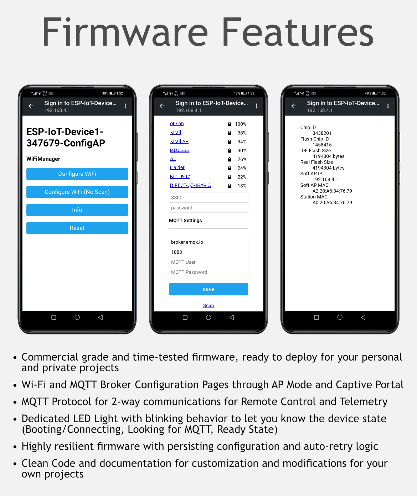

ESP Firmware
This firmware is an ESP8266 based IoT device which provides a simple yet robust foundation for a commercial-grade IoT device for remote control and telemetry over MQTT protocol.
This section will guide you through setting up the development environment and modifying key sections of code to customize it for your own projects.
The device currently controls two IOs while providing a dedicated LED light with blink behaviors to show different states of the device, and a port for a beeper to provide audible feedback.

Setting up the Firmware on ESP8266
The firmware is setup and developed using open-source Visual Studio Code with PlatformIO extension for ease of environment setup and deployment.
Download and install VS Code from following link: https://code.visualstudio.com/Download
Install PlatformIO extension in VS Code from following link: https://marketplace.visualstudio.com/items?itemName=platformio.platformio-ide
Once you have the dev environment ready, you can now open the firmware project.
The .ZIP package contains a folder named iot_starter_kit_firmware which hosts the source code for the firmware. Extract this folder and then right-click to open this folder with VS Code.
You can build the firmware right away by using the Ctrl + Alt + B shortcut once you open the project folder in VS code, or you deploy the firmware to NodeMCU compatible board by using the shortcut Ctrl + Alt + U and it will compile and upload the firmware to connected board via USB.
First build will take a bit longer as the PlatformIO framework will download related SDKs and referenced libraries before compiling. This is a one time process.
If everything goes well, and all the dev tools are properly installed, the firmware will be uploaded to connected ESP8266 based NodeMCU board.
You will need to wire the ESP8266 board with components as per following diagram:

Understanding the Firmware
The Firmware code follows simple code practice with comments at complex logic or where necessary. It can be used as it is, modified as per requirement or parts of its routines can be used in other projects.
MQTT Protocol for the Device
This section describes MQTT protocol implemented and how you can modified it as per your requirement.
To setup private MQTT broker, you can download and install from link: https://mosquitto.org/download/
Base Topic
devices/esp01
The base topic can be modified in the source code for the macro _MQTT_BASE.
Topic for Ping
Topic for command
devices/esp01/set/ping
The device will subscribe to this topic on the given MQTT broker to listen for ping
command in payload, and will publish response on the following topic:
Topic for response
devices/esp01/get/ping
Any client which wants to get the response to the ping command will subscribe to this topic.
The device will send a reply as pong for ping command.
Topics for Ports
These MQTT topics are assigned to IO Ports and sending commands to these topics will change the status of the port.
devices/esp01/set/port1
devices/esp01/set/port2
Listens to command open and send back open to the following topics:
devices/esp01/get/port1
devices/esp01/get/port2
Port 1 Function: Auto Close
The defined port1 uses only the open command from MQTT or from the input button and resets the associated pin for a small amount to time, as defined in the _DELAY_BUTTON macro and then automatically reverts to original state.
Port 2 Function: Toggle State
The port2 is shown as the simple toggle function, which takes a command from MQTT or from the input button, and toggles its state as per the command open or close. The get/port2 topic also uses the Retain functionality of MQTT to retain the last state of the port.
Topic for Sensor Data
The device listens to command data on the following topic to publish sensor data from DHT sensor for Temperature and Humidity with system timestamp:
devices/esp01/set/sensor_data
The sensor data is sent back on the following topic:
devices/esp01/get/sensor_data
The data is sent as a JSON object, here is an example:
{
"Temp": "23.10",
"TempUnit": "C",
"Hum": "15.20",
"Time": "04-Nov-2020 23:52:57"
}
Addtionally, the device also sends the above data every 5 minutes on the get/sensor_data topic which is a good example of receiving telemetry data periodically from the devices and using it for decision-making and presenting on IoT dashboards.
Topic for Beeper
devices/esp01/set/beeper
Sounds the beeper on the device when beep command is sent and replies on following topic with beep:
devices/esp01/get/beeper
Topic for Uptime
devices/esp01/uptime
The device sends uptime on this topic every five minutes on this topic. Note that this topic uses Retain feature of MQTT protocol which retains the last message on the broker. This retained message is then delivered to any new client as it is connected to the broker and subscribes to this topic.
Topic for Log
devices/esp01/log
The device sends all events log to this topic.
Device Functions
WiFi and MQTT Configurations in AP Mode and Captive Portal
The device supports persistent configuration for WiFi Access, MQTT Broker and its credentials. There are two ways to enter in the AP Mode to set these configuration:
- Keep the Button1 pressed at power on or reset and the device will enter the AP mode.
- Long-press Button1 for 8 seconds and the device will reboot and enter the AP mode on the next boot.
Once on AP mode and you can find the device on your mobile WiFi discovery. The device implements the WiFi Captive Portal (Automatically redirects to the settings webpage), so as soon as you connect your PC or Smartphone to this device's WiFi Access Point, you will automatically be redirected to the WiFi and MQTT Settings page. On this page you can choose the AP with internet access which the device will use to connect to the internet, and also save your MQTT Broker, Port, Login and Password.
Once you choose an AP and save your settings, the device will reboot and will use the new settings to connect to the internet and provided MQTT Broker.
Status LED Blink Behavior
The Status LED shows the device state by behaving differently in different states. The following describes the details:
| LED Blink Behavior | Device State |
|---|---|
| Constant short Blinks | In boot sequence |
| Constant very short Blinks | Looking for MQTT broker |
| Three Blinks: 100ms On and 80ms Off | Ping response |
| Constant long Blinks / Heartbeat | In normal state, connected to Internet |
Log on Serial Port and MQTT
The device sends log messages to serial port of all system and data activity, and send some of data activity to MQTT log topic defined above. Log on serial port is a great way to troubleshoot and diagnose any problems.
Public MQTT Broker for Testing
You can use any public MQTT Broker such as broker.hivemq.com at standard port 1883 for testing purposes in device settings and Desktop and Mobile MQTT client. More details can be found at https://www.hivemq.com/public-mqtt-broker/.
You can just use their web based MQTT client at http://www.hivemq.com/demos/websocket-client/ and subscribe to the MQTT topic devices/esp01/# to listen to all communications from this device. Make sure to use Websocket port 8000 when connecting to public MQTT broker using the web based client.